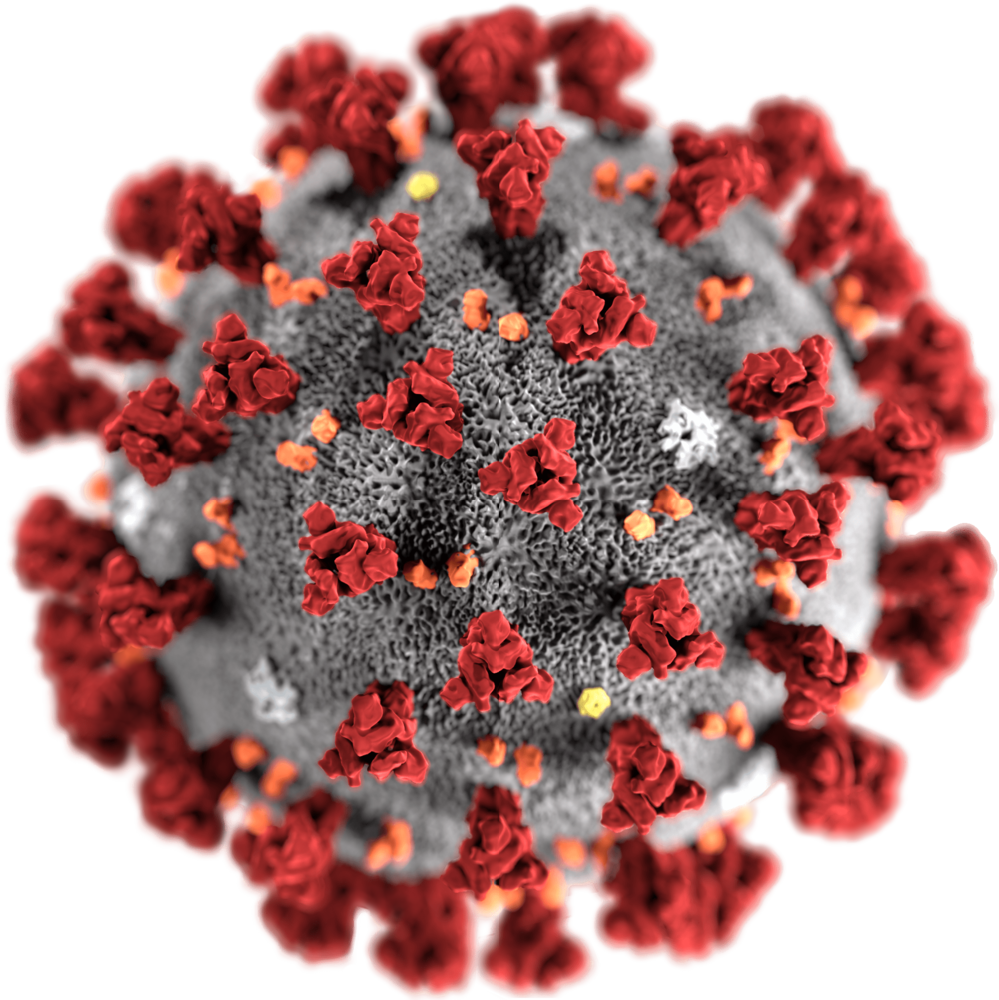

The COVID-19 pandemic is the event of this century, only comparable,
perhaps with the yet-to-come effects of Climate Change.
Its impact have reached every aspect of our lives, from the way people greet each other to
how the structure of work. With this in mind, the COVID-19 project addresses various question through
interactives: What is your risk of contagion? How have those who have the most have contributed? home project? What was the impact on the airline industry? and finally how were twitter users were?
With this project we ty to asnwer a few questions: What is the risk of contagion
based on demographics creates

The

 Calculator Risk
Calculator Risk Virus Billionaires
Virus Billionaires Viral Twitter
Viral Twitter